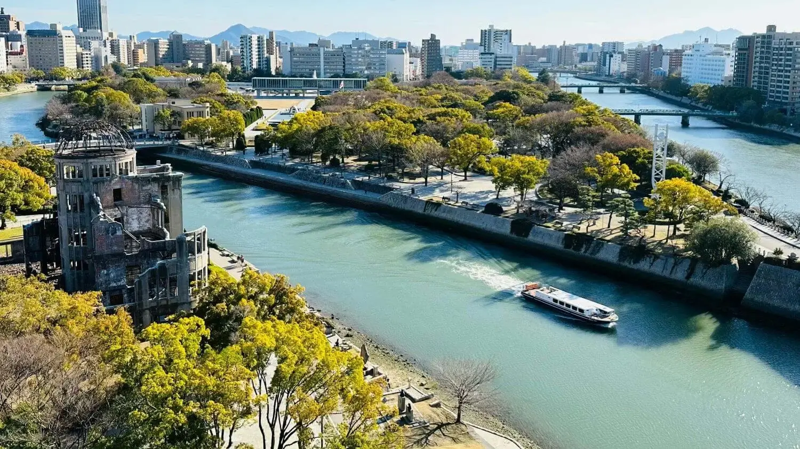

Pontos Turísticos do Japão
O Japão combina tradição milenar com modernidade tecnológica de forma impressionante. Confira abaixo alguns dos principais pontos turísticos:

Monte Fuji

Santuário Fushimi Inari

Castelo de Himeji

Bairro de Shinjuku

Parque de Nara
